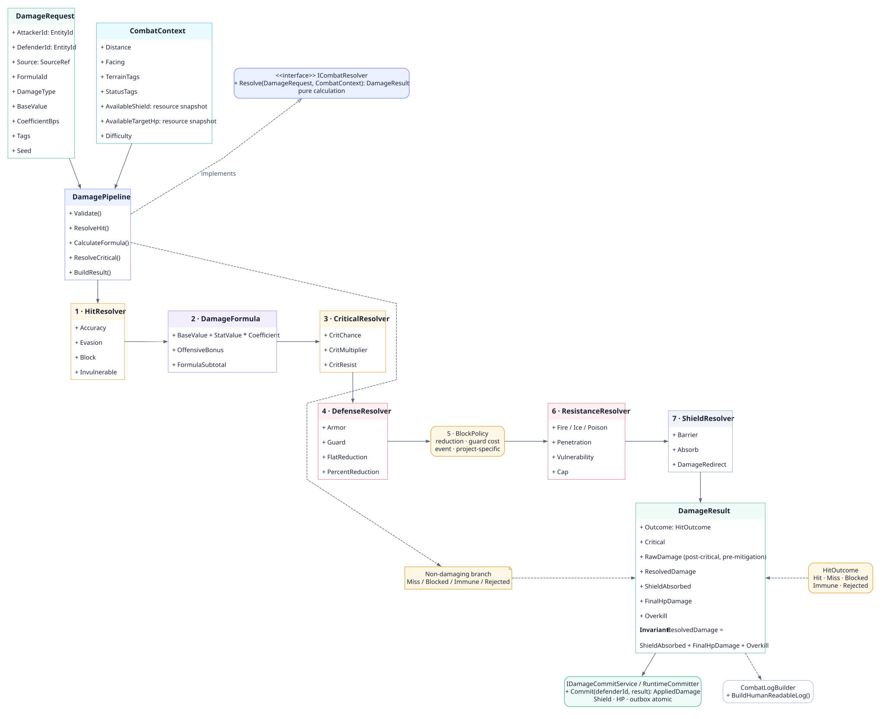
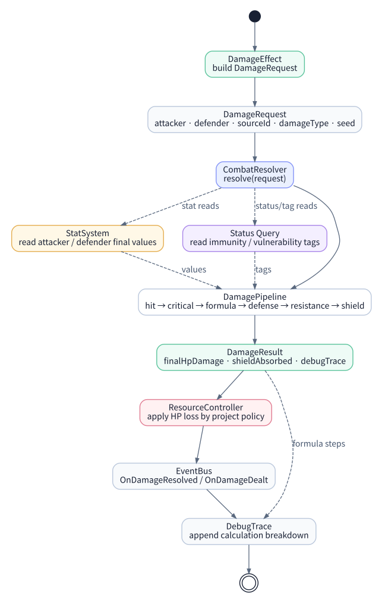
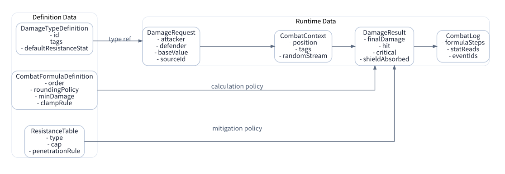

Combat Resolution System
Combat Resolution System은 DamageEffect가 만든 피해 요청을 명중, 치명타, 방어, 저항, 보호막, 반올림 정책을 거쳐 실제 DamageResult로 바꾸는 계산 계층이다. Skill은 행동을 만들고, Effect는 결과 요청을 만들며, Combat은 피해가 왜 그 숫자로 나왔는지 설명한다.
학습 목표
DamageRequest를 단계별로 계산해 DamageResult로 만들고, 계산과 상태 변경의 경계를 설명한다.
선수 개념
Stat 조회, Effect handoff, SourceRef와 이벤트 추적 개념을 먼저 이해한다.
Combat의 역할
DamageEffect는 “대상에게 fire damage를 주어라”라는 요청을 만들 수 있지만, 최종 피해량을 직접 계산하지 않는다. Combat은 이 요청을 받아 대상이 맞았는지, 치명타가 터졌는지, 방어력과 저항이 얼마나 줄였는지, 보호막이 얼마를 흡수했는지를 계산한다.
DamageRequest
를 만들고 Combat은 불변
DamageResult
를 계산한다. 이 시점의 DamageCalculated는 내부 계산 결과일 뿐 외부 반응을 시작하지 않는다. 실제 HP/Shield 변경은 단 하나의
DamageCommitService
가 원자적으로 적용하며, 성공 후에만 DamageCommitted 도메인 이벤트를 발행한다. AfterDamage는 UI와 로그 같은 관찰용 후처리 단계다.
| 담당한다 | 담당하지 않는다 |
|---|---|
| 명중, 회피, 블록, 무적, 회피 프레임 판정 | 스킬 입력과 쿨다운 관리 |
| 기본 피해, 스탯 계수, 공격자 보정 계산 | 스탯 최종값 계산 파이프라인 자체 |
| 방어력, 저항, 관통, 취약, 피해 감소 처리 | 상태 지속시간과 tick 관리 |
| 보호막, barrier, absorb, 피해 전환 처리 | 장비 인벤토리와 아이템 장착 관리 |
| DamageResult, CombatLog, DebugTrace 생성 | UI 데미지 폰트 표시 |
| 결정론적 RandomStream 사용 | AI가 어떤 스킬을 고를지 판단 |
핵심 객체

| 객체 | 책임 |
|---|---|
DamageRequest
|
공격자, 방어자, sourceId, damageType, baseValue, tags, seed를 담는 입력 요청이다. |
CombatContext
|
거리, 방향, 지형, 상태 태그, 난이도, RandomStream 등 전투 상황을 담는다. |
DamagePipeline
|
검증, 명중, 치명타, 공식, 방어, 저항, 보호막, 반올림의 실행 순서를 고정하는 조율자다. |
HitResolver
|
명중, 회피, 블록, 무적, 회피 프레임을 판단한다. |
CriticalResolver
|
치명타 확률, 치명타 배율, 치명타 저항을 계산한다. |
DamageFormula
|
기본 피해, 스탯 계수, 공격자 보정 같은 공식의 중간값을 계산한다. 방어, 저항, 보호막, 최종 반올림은 별도 단계에서 처리한다. |
DefenseResolver
|
armor, defense, guard, flat reduction, percent reduction을 처리한다. |
ResistanceResolver
|
속성 저항, 관통, 취약, 저항 상한을 처리한다. |
ShieldResolver
|
보호막, barrier, absorb, damage redirect를 처리한다. |
DamageResult
|
최종 HP 피해, 흡수량, 치명타 여부, 실패 이유, 이벤트, 디버그 로그를 담는다. |
CombatLogBuilder
|
DamageResult의 계산 근거를 사람이 읽을 수 있는 로그와 DebugTrace 단계로 변환한다. |
피해 계산 파이프라인

- DamageRequest를 수신하고 대상이 피해를 받을 수 있는지 확인한다.
- HitResolver가 명중, 회피, 블록, 무적을 판정한다.
- CriticalResolver가 치명타 여부와 배율을 판정한다.
- DamageFormula가 기본 피해와 공격자 보정을 계산한다.
- DefenseResolver와 ResistanceResolver가 방어, 저항, 관통, 취약을 처리한다.
- ShieldResolver가 보호막, 흡수, 피해 전환을 적용한다.
- 최소 피해, 최대 피해, 반올림 정책을 적용한다.
- DamageResult와 CombatLog를 만들고 DamageCalculated trace를 남긴다. 상태를 바꾸는 이벤트는 아직 발행하지 않는다.
판정·계산·적용 단계
| 단계 | 책임 | 대표 결과 |
|---|---|---|
| Eligibility | 대상이 존재하고 피해를 받을 수 있는지, 무적/면역인지 확인 | Rejected / Immune |
| Resolution | 명중·회피, block/guard, 치명타, 공격/방어/저항 계산 | DamageResult draft |
| Commit | Shield와 HP를 한 번만 변경하고 overkill/death를 확정 | AppliedDamage |
| Aftermath | 로그·UI 관찰 이벤트와 결정론적 ReactionQueue 실행 | DamageCommitted, EntityDefeated, AfterDamage |
DamageEffect와의 연결

{
"effect": "effect.fireball-damage",
"request": {
"attacker": "player_001",
"defender": "enemy_001",
"sourceId": "command.fireball.cast.0001",
"sourceRef": {
"kind": "skill-execution",
"definitionId": "skill.fireball",
"instanceId": "command.fireball.cast.0001"
},
"damageType": "fire",
"formulaId": "combat.fire.v3",
"baseValue": 24,
"scaling": { "stat": "spell_power", "coefficientBps": 12000 },
"tags": ["skill", "spell", "fire", "area"],
"seed": 930144
}
}데이터 모델

공식과 런타임 결과를 분리하면 장르별 전투 공식을 교체하기 쉽다. 액션 RPG는 명중과 회피 프레임을 중시할 수 있고, 턴제 RPG는 속성 상성과 상태 태그를 더 강하게 반영할 수 있다.
Fireball 계산 예시
아래 예시는 Runtime Contract Lab과 같은 Fireball fixture를 사용한다. 명중과 치명타 결과를 고정해 계산 순서를 보여 주며, 모든 비율은 10,000 BPS와 half-up 반올림 정책을 사용한다.
| 항목 | 값 |
|---|---|
| base damage | 24 |
| spell_power | 120 |
| skill coefficient | 1.2 |
| critical multiplier | 1.5 |
| target fire_resistance | 20% |
| shield | 40 |
계산 순서
base = 24 + 120 × 1.2 = 168
critical = 168 × 1.5 = 252
resistance = roundHalfUp(252 × 0.80) = 202
shieldAbsorbed = 40
finalHpDamage = 202 - 40 = 162{
"damageType": "fire",
"hit": true,
"critical": true,
"rawDamage": 252,
"resistanceMultiplierBps": 8000,
"resolvedDamage": 202,
"shieldAbsorbed": 40,
"finalHpDamage": 162,
"events": ["DamageCommitted"]
}설계 변형 포인트
공식 교체형 Combat
DamagePipeline의 순서는 유지하되 DamageFormulaDefinition을 바꾸면 장르별 공식 차이를 흡수할 수 있다.
무적과 회피 프레임
무적은 Stat이 아니라 CombatContext 또는 Status tag로 판정하는 편이 추적하기 쉽다.
보호막 우선순위
Barrier, guard point, absorb, HP 피해 순서를 명시해야 로그와 UI 표시가 일관된다.
결정론적 랜덤
DamageRequest의 seed와 RandomStream을 사용하면 리플레이, 서버 검증, 테스트가 가능하다.
안티패턴
| 안티패턴 | 문제 | 대안 |
|---|---|---|
| DamageEffect 안에 모든 피해 공식 작성 | Effect가 게임별 전투 공식에 강하게 결합된다. | DamageRequest를 만들고 CombatResolver에 위임한다. |
| Combat이 장비 인벤토리를 직접 조회 | 장비 교체와 피해 공식이 서로 묶인다. | 장비는 StatModifier나 TriggeredEffect를 공급하고 Combat은 StatSystem을 읽는다. |
| 저항과 보호막 순서가 문서화되지 않음 | 같은 상황에서 서로 다른 결과가 나온다. | DamagePipeline 순서를 고정하고 테스트한다. |
| 계산 로그가 없음 | 밸런스 디버깅과 QA가 어려워진다. | DamageResult에 formulaSteps와 statReads를 남긴다. |
이해도 확인
Combat이 계산할 판정과 실제 상태 변경의 commit 경계를 나누고, 후속 반응이 시작될 시점을 확인한다.
- 01 · 책임 경계
Combat이 장착 장비를 직접 조회하거나 공격력 Modifier를 등록해도 될까?
정답과 해설안 된다. 장비는 StatModifier나 TriggeredEffect를 공급하고, Combat은 Stat의 최종값과 읽기 전용 Context만 사용해 피해를 판정한다.
- 02 · 경계 상황
공격이 block되면 반드시 hit=false, 피해 0으로 처리해야 할까?
정답과 해설아니다. 장르 정책에 따라 block은 피해 감소, guard 자원 소모, 별도 성공 이벤트가 될 수 있다. 명중과 block 결과를 하나의 boolean으로 합치지 않아야 한다.
- 03 · 시스템 연결
DamageEffect 요청 뒤 흡혈이나 Burn 같은 후속 반응은 언제 시작할 수 있을까?
정답과 해설Combat이 불변 DamageResult를 계산하고 상태 저장소가 Shield와 HP를 원자적으로 commit한 뒤여야 한다. commit 성공 후 DamageCommitted가 발행된 시점부터 ReactionQueue가 후속 반응을 실행한다.
설계 점검
- DamageRequest와 DamageResult가 분리되어 있다.
- Hit, Critical, Defense, Resistance, Shield 단계가 독립 테스트 가능하다.
- 방어/저항/보호막 적용 순서가 문서화되어 있다.
- Combat은 스탯을 읽지만 Modifier를 직접 등록하지 않는다.
- DamageResult에 최종 피해와 함께 실패 이유, 흡수량, 이벤트, DebugTrace가 포함된다.
- Fireball 같은 실제 예제에서 계산 근거를 재현할 수 있다.